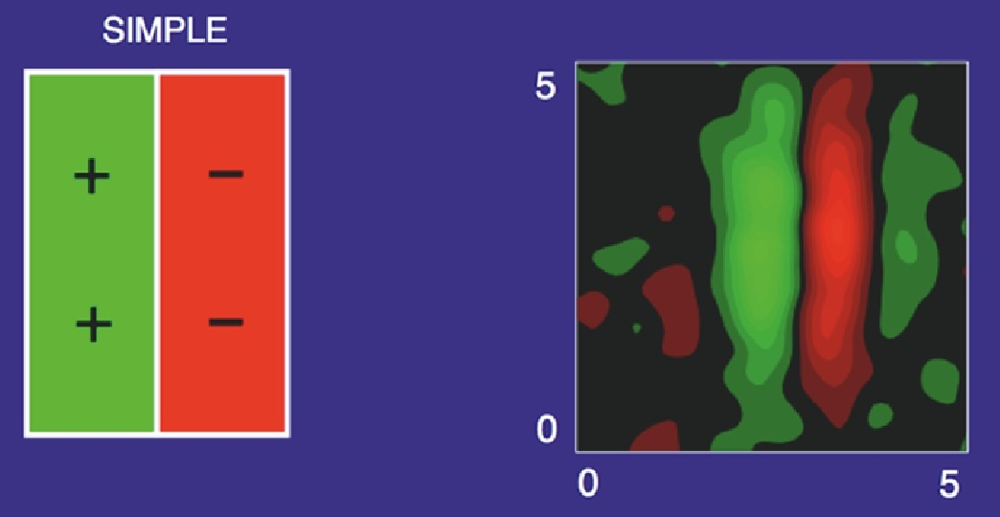
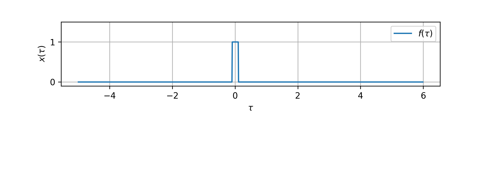
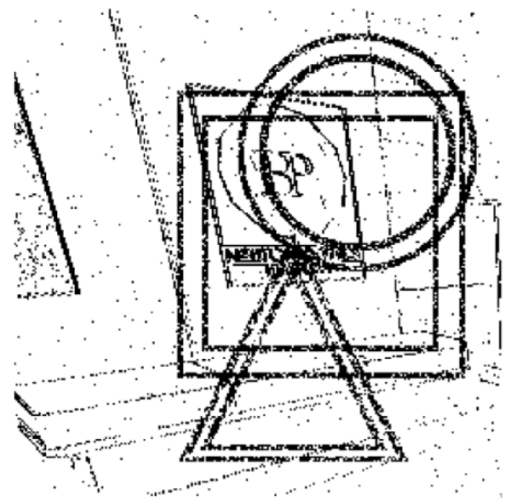

Event-based object tracking
Translation and scale invariance in real-time with receptive fields
Jens Pedersen & Raghav Singhal & Jörg Conradt
jeped@kth.se jegp@mastodon.social jepedersen.dk
Thank you - Juan P. Romero B., Emil Jansson, Harini Sudha


Scale-space theory

Lindeberg, Journal of Mathematical Imaging and Vision (2022)
A model $g$ is invariante to transformation $f$: $$ f(g(x)) = g(x) $$
Invariance properties of convolutions
Scale invariance with receptive fields

Capturing structure:
How does this work in 2 dimensions?
Lindeberg, Heliyon 7 (2021)

Lindeberg, Journal of Mathematical Imaging and Vision (2022)
Gaussian receptive field provides
- Linearity between n-th gaussian derivatives
- Translation invariance
- Scale invariance
$\implies$Capture spatial features
But what about time?
- Spatial and temporal invariances in sparse signals
- Stepwise real-time predictions

Signal processing with convolutions

Temporal
heatmaps


- Read out coordinates at every frame
- Differentiable
Experimental setup & results
1ms frames with coordinate labels
240'000 datapoints - Bernouilli $p=0.8$
Model with 4 scale spaces

Runs at 1000Hz on GPUs

Event-based object tracking
Limitations
- Only simulated data
- Only on GPUs
- Only for translation and scale
Event-based object tracking
Summary
- SNN rivals ANN despite high density
- Differentiable coordinate transformation
- Real-time vision processing with events
Event-based object tracking
Translation and scale invariance in real-time with receptive fields
Jens Pedersen & Raghav Singhal & Jörg Conradt
jeped@kth.se jegp@mastodon.social jepedersen.dk
Thank you - Juan P. Romero B., Emil Jansson, Harini Sudha